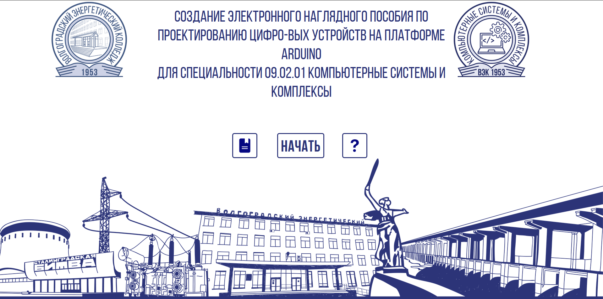
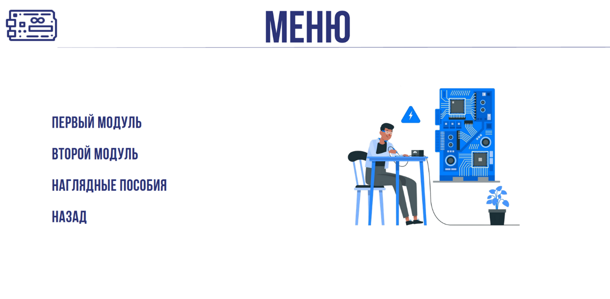

Чтобы запустить электронный учебно-методический комплекс, необходимо в папке «ЭУМК проектирование цифровых устройств на платформе Arduino» выбрать и запустить файл «index.html» с помощью браузера - появится главная страница в окне браузера. Данный учебно-методический комплекс предполагает использование браузера в полноэкранном режиме, для включения полноэкранного режима необходимо нажать клавишу «F11» (FN+F11 если у вас ноутбук) на клавиатуре. Если кнопки или изображения находятся не по центру экрана используйте сочетние клаыиш ctrl+mscroll(колесико мыши). На странице находятся три кнопки: «Начать», «Справка», «Инструкция».

Для перехода на страницу с инструкцией по использованию данного учебно-методического комплекса необходимо на главной странице нажать по кнопке «ИНСТРУКЦИЯ» Чтобы перейти на страницу с описанием учебно-методического комплекса, необходимо нажать на кнопку «СПРАВКА»
Чтобы перейти к меню, необходимо нажать на кнопку «НАЧАТЬ» на главной странице.
Вкладка «Главная» имеет следующий вид.

Переход на главную страницу осуществляется нажатием на заголовок или на кнопку "НАЗАД".
Чтобы закончить работу с электронный учебно-методическим комплексом, необходимо выйти из полноэкранного режима браузера (повторное нажатие клавиши «F11» или FN+F11 если у вас ноутбук) и закрыть вкладку с электронным учебно-методическим комплексом.